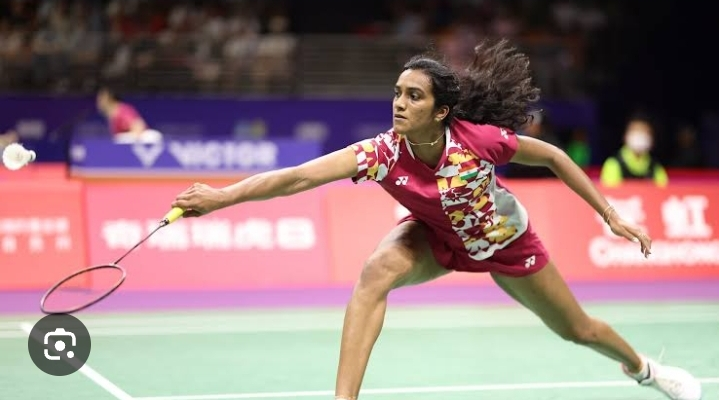
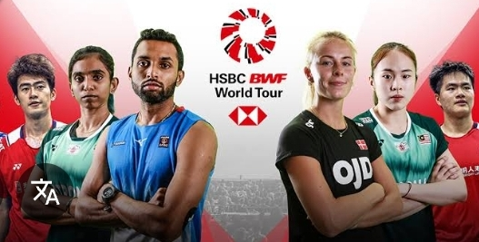
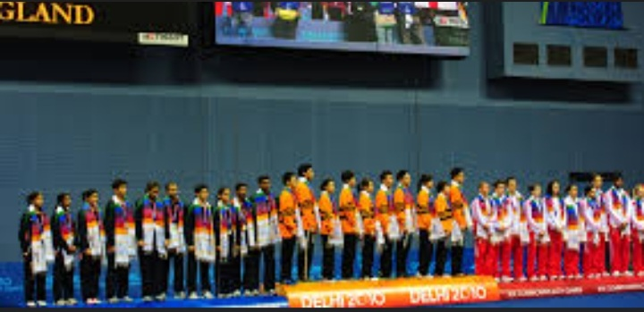
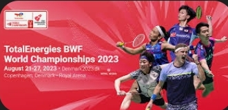
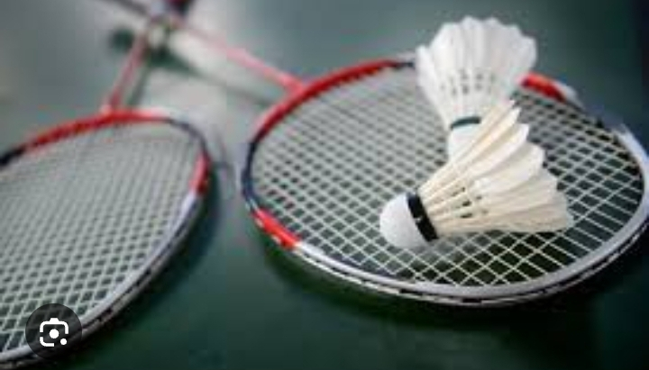
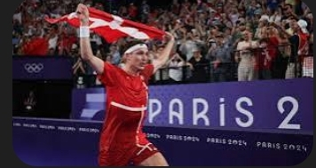

|  |  |  | ||||||
|---|---|---|---|---|---|---|---|---|
| Olympics: Badminton has been included in the Summer Olympics since 1992. | BWF World Tour Finals: This is the culmination of the BWF World Tour, featuring the top players in each discipline. | Commonwealth Games: Badminton is also part of the Commonwealth Games. |
|  |  |  |
|---|---|---|
| World Badminton Championships: This annual event (except in Olympic years) features all five badminton disciplines. | The 2025 PETRONAS Malaysia International Challenge will be held from August 12 to 17, 2025, in Perak, according to the Badminton Association of Malaysia (BAM). | The BWF World Championships will be held in Paris from August 25th to 31st, 2025. The matches will take place at the adidas arena. Tickets for the event are already on sale, with prices starting from 15€ for the first round. |